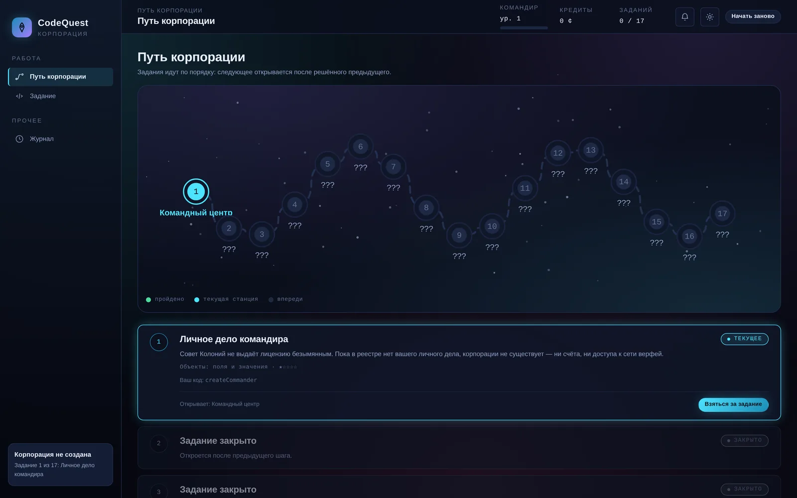
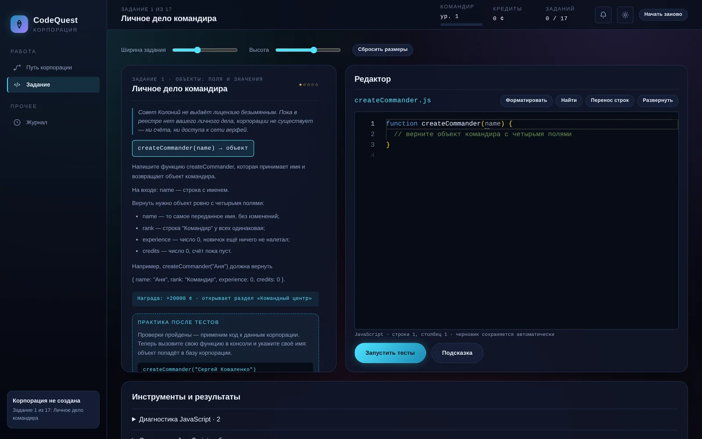

17 завдань із наростанням
Від об’єкта з чотирма полями до циклу бою: методи й this, reduce, some, сортування з розподілом за лімітами, filter і map, while. Наступне відкривається лише після повністю закритого попереднього.
Навчальна гра, у якій космічною корпорацією керує ваш код на JavaScript. Кожне завдання — практична задача за сюжетом: поки функцію не написано, механіка не працює, а розділ інтерфейсу закритий. Редактор Monaco, тести в окремому потоці — і жодного бекенду.
Головний принцип: розділи корпорації не мають власної логіки. Вони просять виконати функцію, яку гравець написав у завданні, і показують її результат. Зламали рішення — розділ чесно покаже помилку замість даних.
Кожне завдання проходиться у два кроки. Спершу функція пишеться в редакторі, доки не пройдуть тести. Потім її треба викликати в консолі корпорації зі справжніми значеннями — і результат лягає в базу: введете своє ім’я, і в реєстрі з’явиться саме ваш командир. Лише тоді відкривається наступний пункт меню.
Функції не пишуться раз і назавжди. planFlight з’являється в дев’ятому завданні простою, а далі гравець сам її дороблює: десяте враховує вантаж, одинадцяте — аварійний резерв. Попередні перевірки проганяються знову як «попередня поведінка», бо на функцію вже спираються розділи й сусідні функції.
Від об’єкта з чотирма полями до циклу бою: методи й this, reduce, some, сортування з розподілом за лімітами, filter і map, while. Наступне відкривається лише після повністю закритого попереднього.
Рішення виконується у Web Worker: функція з нескінченним циклом переривається, не кладучи вкладку. Той самий воркер рахує дані для розділів і виконує команди консолі.
Редактор відкривається кодом попереднього етапу, блок «що змінилося» називає різницю, а кнопки показують порядкове порівняння й повертають стару версію. Чернетка, що не пройшла тести, у застосунок не потрапляє.
Тринадцяте завдання дає не порожню заготовку, а готову функцію з багом: треба зрозуміти, чому прихід і витрата пального рахуються однаково, і виправити. Розділ «Ревізія» звіряє результат із реальним баком.
Пальне по 40 ¢ за тонну, бак на 600 т, трюм на 150 т. Витрату рахує ваша planFlight, експедицію веде ваша runExpedition, руду продає ваша sellOre — виручка залежить від того, як ви розподілили вантаж.
Вітрина написаного: картка на кожну функцію з її етапами, посиланням на код і на розділ, який нею рахує. Заповнюється в міру проходження.
Статичний сайт без збірника: браузер завантажує ES-модулі напряму, Monaco лежить локально у vendor/, стан гри зберігається в браузері. Сервера немає — гра працює й офлайн як PWA.
appSource() збирає по одній активній версії кожної функції, тож два оголошення planFlight з різних етапів ніколи не зустрінуться. Окремі перевірки стежать за економікою, редактором, графіками й самими завданнями.
index.html каркас і розділи корпорації js/ main.js точка входу, маршрутизація розділів state.js стан гри, збереження в браузері runner.js обмін повідомленнями з воркером runner-worker.js виконання коду гравця в окремому потоці runner-core.js тести, виклики для розділів, консоль editor/ обгортка над Monaco, порівняння версій data/ 17 завдань: умова, тести, нагорода market.js продаж руди enemy.js противник для бойових завдань vendor/ Monaco Editor локально, без CDN sw.js service worker, офлайн tests/ перевірки завдань, економіки, редактора, графіків
Натисніть на зображення, щоб відкрити його на весь екран. Стрілки ← → гортають галерею.

